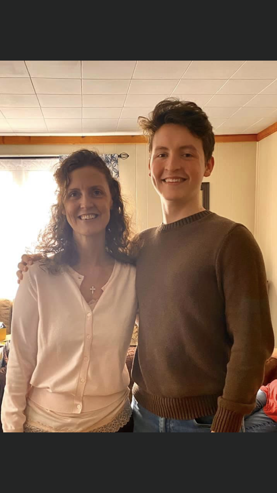

.jpg)
Hello, my name is Stephanie Jones and the title of my project is EJ's Recipe Guide
Welcome to my project. This is a recipe guide that is built for my son, his friends, and other college students to use. The main objective is to provide a fun and quick way to list what ingredients that the user has available and then find a recipe based on those ingredients. The main objective of the project is to encourage my son and other students to be able to save money and possibly eat healthier but providing a way to use what they have available instead of eating out constantly. I attempted to use several personalizations with CSS to encourage the use of the website. I used my son's name in the title as the major personalization to encourage usage. I also added a lot of css details to make it interactive for the users. I used purple and blue colors as accents for the page because those are my son's favorite colors, I emphasized the box shadow for the search input, search button, clear button, and the back button. I also used css to make the search and clear buttons to change shape with rounded edges on all sides when being engaged; all the buttons change color when pressed, and they all move upward. I also used different cursors based on the functionality of the button- the search and random have a wait cursor, while the clear and back have a pointer cursor.
This was a great learning experience for me. I wanted to add lots of css design elements to engage the user-which will be college students who are more interested in aesthetics than actual function. I also learned a great deal about JavaScript and how to make the syntax work for me in a way that enables the webpage to work as intended. There were lots of aspects of JavaScript that I did not know how to use correctly; however, using various sites enabled me to understand what to use and where to use it. I have listed those in the sites area on the ReadMe file.
There were several challenges for me during this process. I struggled with making the JavaScript work correctly. Primarily the recipe card was a challenge. In styling the card, I had to delete the "hidden" in html which I did not realize initially, for example. The JavaScript to display exactly what I wanted to be shown on each recipe was also a huge struggle for me and I learned a great deal watching numerous videos and reading several sources such as "web development for dummies" to overcome all of these obstacles. Free Code Academy was a huge help with this particular struggle and that source is also linked in the ReadMe. It is an actual guide on how to build a modal. Another challenge was making the search input responsive to fit really small mobile devices. Fter completing the recipe guide and had all the issues working correctly, I decided to add a page with a converter for ingredients for the user. Even as an expierced cook, when I do measure I often do not have the correct measuring spoons for example. I included this converter to prevent not having the correct equipment to cook with as an excuse or hinderance to being able to cook for themselves.
The about me page was added to allow the user to understand why I made this webpage and also to include a brief history of my first project. I have listed several improvements or changes that I would like to implement in the future with this webpage and I look forward to struggling my way through those. I want to really expand this page and eventually make it accessible to everyone. I want to add a favorite page because most users will have favorite recipes that they want to make again and having that easily accessible will improve the user experience. I also wany to implement code that will enable the user to produce a shopping list for ingredients they do not have on hand. However, the biggest challenge will be that I want to link this to the users favorite local stores so they can purchase these items at the cheapest price possible. I have built an API with express and I want to use that in the future also to add my recipes that I know my son loves to the website with the intent on this becoming a sharing source for others to share what they like and allow a community to build. Lots of future ideas for when I have more time 😊

The webpage currently contains three pages. Each page has a link to the other two pages- marked with the title on the link button. Simply click on the link to navigate to either page. TO use the recipe guide, please enter the ingredients that you want to use and click search. The API will bring up the various selections that include what you listed. To view the recipe of your choice, simply click on the image and follow the directions. For user convience, I have included a link to the original recipe and a youtube video is sometimes available- for either click on the link provided. The user can also pick a random recipe if they want to try a new recipe. The same process applies- simply click and follow the recipe or scroll down for the video.
Hope you enjoyed the page and find it useful.